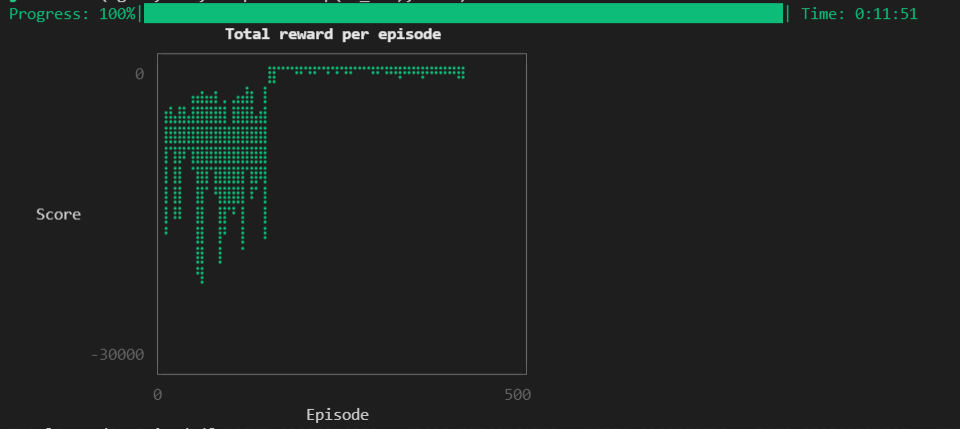

前面用自动控制理论仿真了倒立摆的起摆和稳定，因能对其精确建模，所以可以进行非常精确的控制，而且抗干扰特强。
近几年人工只能大火，让我们看一下强化学习对倒立摆的控制效果如何。
此次仿真使用了强化学习的SAC算法（soft actor critic）。此算法为了 解决之前深度强化学习算法的采样困难和超参敏感问题，增加收敛稳定性。它主要有五个神经网络：一个策略网络policy，两个Q网络Q-net， 两个Q目标网络Q-target。policy输出一个高斯分布(μ, logσ)，取样得到action，通过取样可以加大自由探索空间。Q网络输出价值value， 通过学习使其接近由我们定义的奖励函数reward算出的价值，然后指导policy网络泛化状态空间对应的最佳action。
奖励函数reward的定义对于学习及其重要，这里的定义为：
$reward = -0.1(x^{2}+5 \theta ^{2}+0.05 u^{2})-100B$
$\begin{array}{l} B= 0 \quad if \quad (x > 5\quad or \quad\theta >8\pi \quad or \quad step>600)\\ B = 1 \quad else\\ \end{array} $
奖励函数都是惩罚项，为了让价值value最大化，即让奖励趋向于0，$x \theta u$都趋向于0，从而保证摆杆竖直向上。
神经网络的学习过程就是一个梯度下降（上升）的过程， 网络初始值和学习步长对最终找到的解有很大的影响。深度强化学习是基于经验学习（样本学习），得到的解本就不是任务最优解。 强化学习不同于监督学习，有一个固定的标签。强化学习的标签是由自身的网络计算得来，网络数值在不断变化，标签也在不断变化， 收敛不稳定。即便加入目标网络targetnet能更好的保证收敛，对于高维度学习任务找到全局最优解仍然是及其困难的。
策略网络的输入层用了五个节点:
$\mathbf{x}=\left(\begin{array}{l} sin(\theta) \\ \cos(\theta) \\ x \\ \dot{ x} \\ \dot{\theta } \end{array}\right)$
输出则为水平方向的力$u$的高斯分布。
经过测试发现，此算法100%可以收敛，但90%的解不是我们想要的结果，大部分收敛的结果是摆杆原地一直转圈，部分收敛结果则完全失败。 收敛的结果对于学习步长比较敏感，相差$10^{-5} $就有可能找到一个不错的解，如上图gif所示，摆杆只摆了三下便可竖直向上并且稳定住。 此外我还尝试过改变神经网络，策略和Q网络分别用$32\times 32$隐藏层全连接网络，就能达到如此效果，不过抗干扰性极差，只有摆杆在初始状态 垂直向下的情况下才会成功，后来改用$128\times 128$，就极大的增加了抗干扰性，对于大部分初始状态，策略网络都可以成功稳定住摆杆。
附一张奖励函数的收敛图（图中episode显示不对，总共有7万步，用时12分钟，i5-4290，rtx1660ti）

强化学习相对于经典理论控制还是有一些缺点，比如通用性弱，改变倒立摆的参数，就需要重新训练网络，而调参的时间成本很大， 比如我调一次参，测试一次就12分钟。还有我们无法像状态反馈那样让倒立摆精确的稳定在任何我们想要的地方。
仿真语言：Julia
强化学习库：ReinforceLearning
绘图库：Makie
2021-10-1